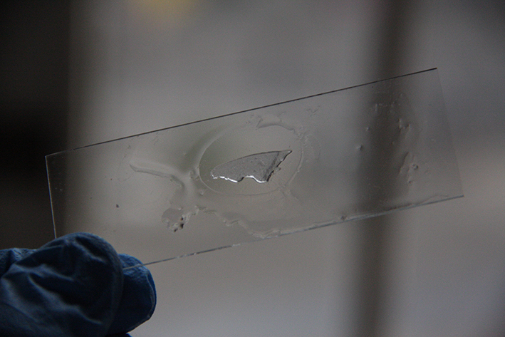
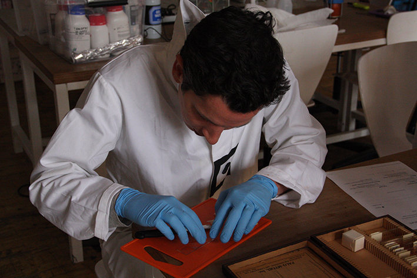
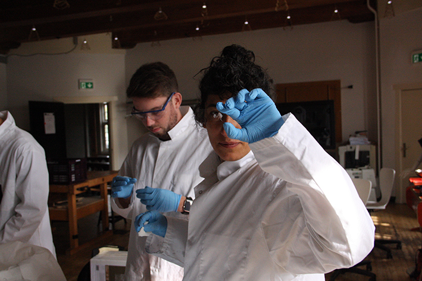
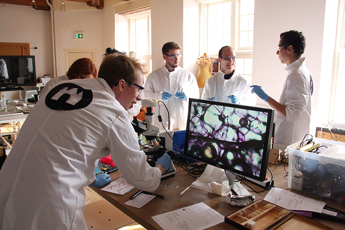

10 weeks at the biohack academy at the Waag
Put a small droplet of water on a object slide.
Put a very thin layer of onion on the slide
Tim at work, excellent bit of cutting.
Yasemin showing her slide
Stain the sample by a droplet of crystal violet and let it stain for max 60 seconds.Wash it off with tap water
Result! This worked really well, you can see the cells as well as the nuclei.
Here you can find everything about optics, how to build your own microscope and how to stain cells.
Hereyou can find the protocol for preparing microscopic slides.
And here you can find the protocol for gram staining